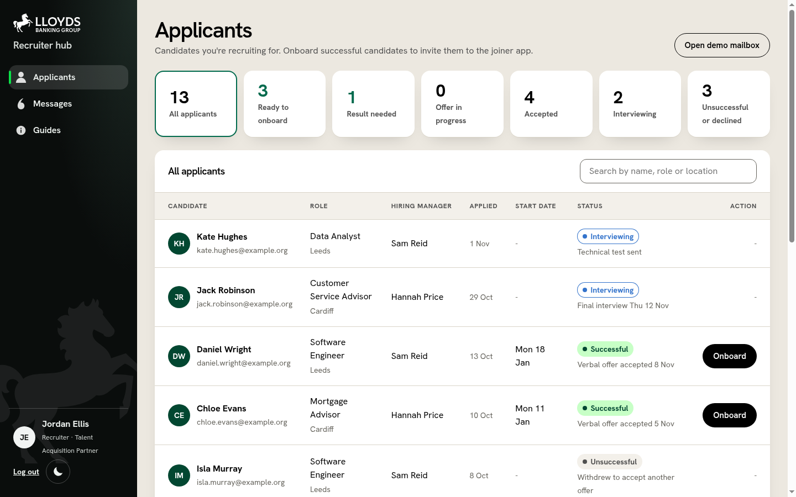
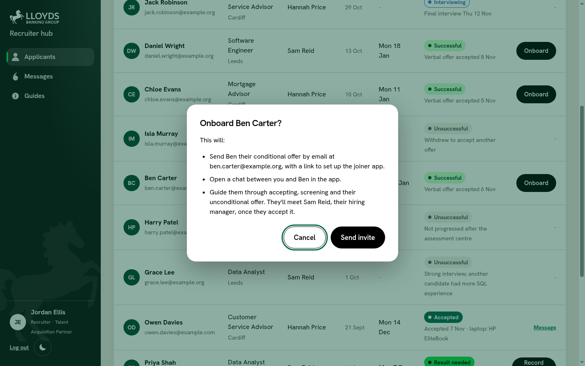
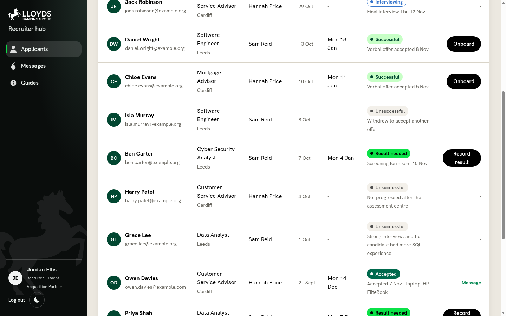
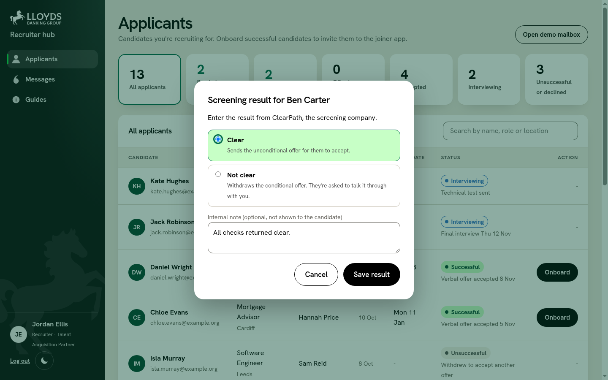
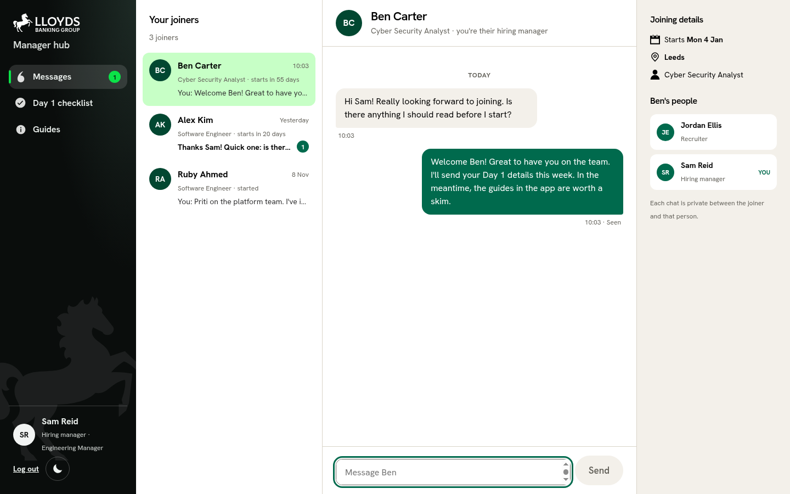
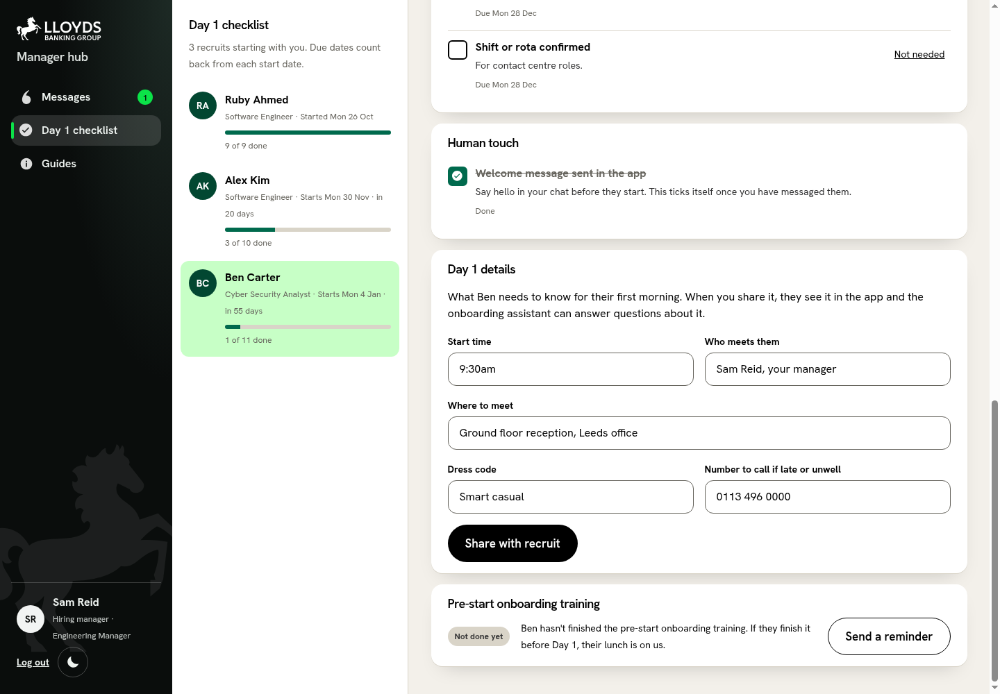

From offer
to Day 90.
A joining companion that guides the recruit, and makes communication between them, their recruiter and their manager easier.
LaunchPad '26 · Team destrict9
The problem
Between “yes” and Day 1,
nobody is steering.
01
Weeks of silence
Screening takes weeks. Joiners can’t tell what’s normal, so they worry, or drift away.
02
A record, not a guide
Workday logs the process. It doesn’t say what’s next, or what applies to this role and this city.
03
Everyone chases
Recruiters and managers chase by email, and the support stops on Day 1.
Our answer
Five phases to keep every colleague connected and engaged.
2
Getting readyJoining the stable3
First 30 daysFinding your stride4
30 to 60 daysSetting your course5
60 to 90 daysFull horsepower
Phase 1 · Offer
Jordan onboards Ben in one click.
Recruiter hub · Applicants

Onboard Ben Carter?

- Ready to onboardBen: “Successful”, verbal offer accepted
- One click, one offerSends the conditional offer and opens a private chat
- Account createdBen activates it himself when he is ready
Phase 1 · Offer
Ben gets an invitation to the app.
A stand-in for email
One-time link
His app account
BCBen CarterRecruit
JEJordan EllisRecruiter
Phase 1 · Offer
Honest progress while the checks run.
Read, then accept
No news is normal
Jordan · Applicants

Live
Jordan’s table updates itself: “Result needed”
JEJordan EllisRecruiter
BCBen CarterRecruit
Phase 2 · Getting ready
Jordan records the result. Ben’s phone changes.
Jordan · Record screening result

Internal note never reaches Ben
Live
Now it’s safe to hand in your notice.
Phase 2 · Getting ready
Early choices, so Day 1 has no delays.
Choose a laptop
Add a photo
- Recommended for his roleHP EliteBook for a Cyber Security Analyst. He can change it until a week before he starts.
- A photo for his building passReception prints it ahead of Day 1, and it shows on his home screen. He can retake it later.
…and it flows to Sam
BCBen CarterRecruit
SRSam ReidHiring manager
Phase 2 · Getting ready
Connect with your manager before Day 1.
Manager hub · Messages

Live
- Unlocked by accepting the offer
- Private to Ben and Sam
- Unread badge, typing indicator, “Seen”
SRSam ReidHiring manager
BCBen CarterRecruit
Phase 2 · Getting ready
Sam shares Day 1 details. Ben sees them straight away.
Manager hub · Day 1 checklist

Due dates count back from the start date
Live
“Your first day” appears on Ben’s phone.
Phase 2 · Getting ready
9pm on a Sunday? Just ask.
Suggested questions
Answer, with sources
- Answers only from our guidesFictional documents, not real bank policy.
- Shows its sourcesEvery answer links back to the guide it came from.
- Knows Ben’s Day 1 details“9:30am, ground floor reception, and you’re meeting Sam.”
- Hands over to a personWhen it can’t answer, or the question is about Ben’s own case.
RARuby · Day 16Recruit
TBTom · Day 44Recruit
Phases 3 to 5
After Day 1, it keeps going.
- What to do nowMandatory training, guides, the 30-day check-in.
- Goals and a planSetting goals, a development plan and growing a career.
3 · Finding your stride
4 · Setting your course
5 · Full horsepower
Honest scope
Real, simulated, and what’s next.
Real
- Login, roles and live messaging
- The stage machine behind every step
- The assistant, grounded in guides
- Manager checklist and Day 1 details
Simulated
- Email (the demo mailbox)
- ClearPath, the screening company
- Phases 4 and 5: previews
- All data synthetic
Next
- Phases 4 and 5 for real
- Real email and company sign-in
- Measure “connected and confident” at Day 30
Thank you.destrict9 · built with Claude Code · about 110 end-to-end checks